ALT <- import("./data/adlbc.xpt") %>%
filter(PARAMCD == "ALT")
ALT2 <- ALT %>%
filter(VISITNUM > 3) %>%
mutate(WEEK = floor(ADY/7))
TREATfac <- ALT2 %>%
select(TRTA, TRTAN) %>%
unique() %>%
arrange(TRTAN) %>%
mutate(TREATMENT = factor(TRTA, ordered = TRUE))
ALT2 <- ALT2 %>%
mutate(TREATTXT = factor(TRTP, levels = TREATfac$TRTA))
uniqueVal <- function(x){
if(length(unique(x))>1) simpleWarning(paste0("열에 두 개 이상의 값이 있습니다:",x))
unique(x)
}6 {ggplot2} 확장 패키지
이 연습에서는 5개의 {ggplot2} 확장 패키지를 소개합니다: {gghighlight}, {ggdist}, {ggridges}, {patchwork}, {cowplot}
이 미니 프로젝트에서는 {ggplot2}를 사용하여 만든 플롯을 보강하는 일부 R 패키지를 살펴볼 것입니다. {ggplot2}를 배우는 것의 가장 큰 장점 중 하나는 많은 패키지가 {ggplot2} 객체인 시각화를 생성한다는 것입니다. 즉, 이러한 도우미 패키지를 사용하여 보강하고 향상시킬 수 있습니다.
이 미니 프로젝트에서는 {gghighlight}, {ggdist}, {ggridges}, {patchwork} 및 {cowplot}을 만나게 되지만 탐색할 다른 많은 패키지가 있습니다.
6.1 1. 데이터셋 생성
이 데이터셋은 교육/테스트 목적으로 생성된 CDISC의 분석 실험실 화학 데이터입니다. 우리는 알라닌 아미노전이효소(ALT) 결과에 중점을 두고 있습니다. ALT2 데이터셋에 대해 연구의 “활성” 단계만 부분집합으로 만들고 있습니다. 분석 활성 치료 기간 내의 주를 정의하는 새 변수 WEEK를 계산하고 있습니다.
6.2 2. 시간에 따른 ALT 측정의 스파게티 플롯 생성
먼저, 시간에 따른 ALT 측정의 스파게티 플롯(각 피험자에 대한 프로필)을 표시하고 정상 범위를 표시해 보겠습니다. 마지막 미니 프로젝트에서 배운 내용을 사용하여 ggplot 및 geom_line 문에 대한 mapping 인수를 채웁니다. x축에는 ADY를, y축에는 LBSTRESN을 사용합니다. geom_line에서는 group 속성을 사용하여 지정된 피험자에 대한 모든 값을 연결하려고 합니다.
또한 A1LO 및 A1HI 열을 사용하여 ALT 값의 정상 범위를 보여주는 음영 영역을 만듭니다. alpha 인수는 이 음영 영역을 더 투명하게 만듭니다. 우리는 음영 처리된 geom_ribbon 영역을 한 번 그리려고 합니다(데이터셋의 A1LO 및 A1HI 값을 중첩하는 대신(모든 피험자에 대해 반복됨)). 이전에 정의한 uniqueVal 함수를 사용하여 정상 범위 최소값 및 최대값에 대한 단일 값을 선택합니다.
ALTmin <- uniqueVal(ALT2$A1LO)[1]
ALTmax <- uniqueVal(ALT2$A1HI)[1]
plot1 <- ALT2 %>%
ggplot(mapping = aes(x=ADY, y=LBSTRESN )) +
geom_line(mapping = aes(group=USUBJID )) +
geom_ribbon(mapping = aes(ymin = ALTmin, ymax = ALTmax), fill = "green", alpha = 0.2)
plot1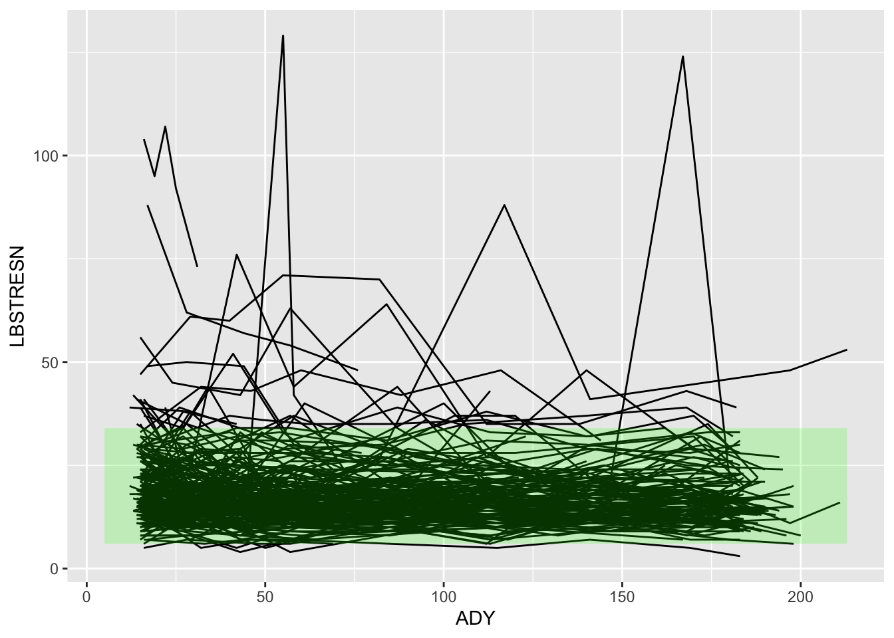
데이터를 “정리”하기 전에 데이터가 어떻게 보이는지 확인하기 위해 이 첫 번째 플롯을 수행하는 것이 종종 유용합니다. 매우 높은 값이 일부 있다는 점에 유의하십시오. 이러한 점을 생략하는 대신 y축에 대해 더 좁은 범위로 “확대”하고 싶습니다. 마지막 미니 프로젝트에서 이를 소개했습니다.
plot1b <- plot1 +
coord_cartesian(ylim=c(0, 100), xlim = c(0, 125))
plot1b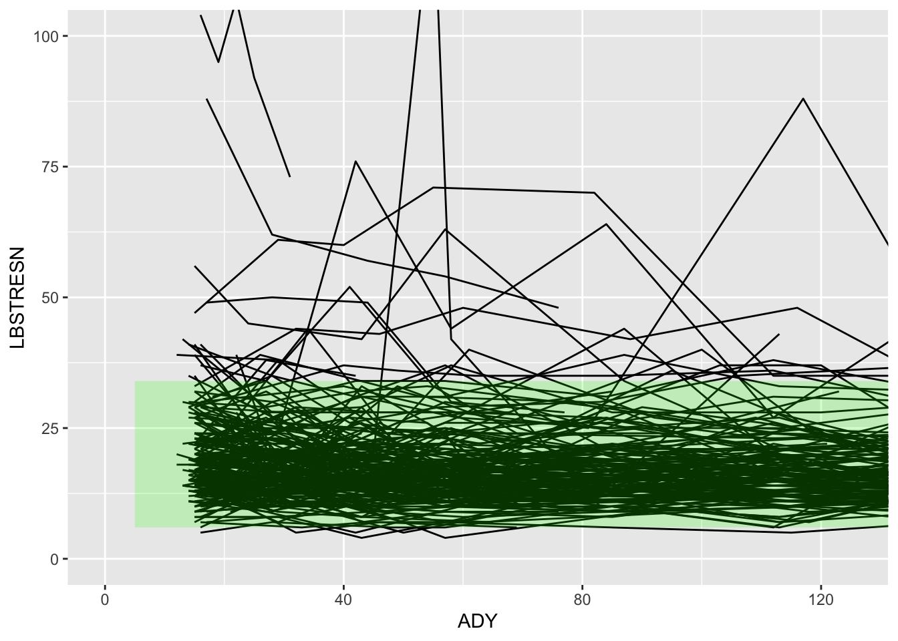
6.3 3. {gghighlight} 사용
실험실 결과가 정상 범위를 벗어나는 피험자를 강조 표시할 수 있다면 유용할 것입니다. {gghighlight} 패키지를 사용하여 이 작업을 수행할 수 있습니다. {gghighlight}는 기존 플롯 객체를 가져와 지정된 조건(부울 표현식)과 일치하는 플롯의 값을 강조 표시합니다. gghighlight는 조건과 일치하지 않는 모든 값을 더 희미하게/회색으로 만들어 나머지 값이 더 명확하게 보이도록 합니다. 플롯에서 그룹 속성을 사용하는 경우 플롯에서 강조 표시되는 그룹을 식별하는 데 도움이 되는 레이블을 제공합니다. 여기서는 데이터에 많은 피험자가 있으므로 레이블 표시를 건너뜁니다.
여기서 gghighlight에 사용된 조건은 각 피험자가 LBNRIND 변수가 누락된 값이 있는지 여부를 확인합니다. 즉, 각 피험자가 “HIGH” 또는 “LOW”로 표시된 값이 있는지 확인합니다.
library(gghighlight)
plot1c <- plot1b +
gghighlight::gghighlight(any(LBNRIND = "")) Warning: There were 247 warnings in `dplyr::summarise()`.
The first warning was:
ℹ In argument: `quasi_parallel(p1 = any(LBNRIND = ""), ..nrow = 1L)`.
ℹ In group 1: `highlight.......... = 1`.
Caused by warning in `any()`:
! coercing argument of type 'character' to logical
ℹ Run `dplyr::last_dplyr_warnings()` to see the 246 remaining warnings.Warning: There was 1 warning in `dplyr::transmute()`.
ℹ In argument: `quasi_parallel(p1 = any(LBNRIND = ""), ..nrow = n())`.
Caused by warning in `any()`:
! coercing argument of type 'character' to logicallabel_key: USUBJIDplot1c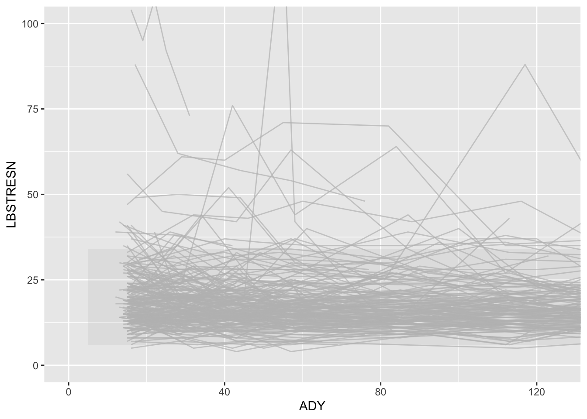
gghighlight와 함께 패싯을 사용하려면 calculate_per_facet 인수를 설정하여 gghighlight에 각 패싯 내에서 조건을 충족하는 값을 강조 표시하도록 알려야 합니다. 그렇지 않으면 gghighlight는 패싯 내의 모든 관측치를 표시합니다.
plot1d <- plot1b +
facet_wrap( ~ TRTP) +
gghighlight::gghighlight(any(LBNRIND = ""),
calculate_per_facet = TRUE) Warning: There were 247 warnings in `dplyr::summarise()`.
The first warning was:
ℹ In argument: `quasi_parallel(p1 = any(LBNRIND = ""), ..nrow = 1L)`.
ℹ In group 1: `highlight.......... = 1`.
Caused by warning in `any()`:
! coercing argument of type 'character' to logical
ℹ Run `dplyr::last_dplyr_warnings()` to see the 246 remaining warnings.Warning: There were 3 warnings in `dplyr::summarise()`.
The first warning was:
ℹ In argument: `quasi_parallel(p1 = any(LBNRIND = ""), ..nrow = 1L)`.
ℹ In group 1: `highlight.......... = 1`.
Caused by warning in `any()`:
! coercing argument of type 'character' to logical
ℹ Run `dplyr::last_dplyr_warnings()` to see the 2 remaining warnings.label_key: USUBJIDplot1d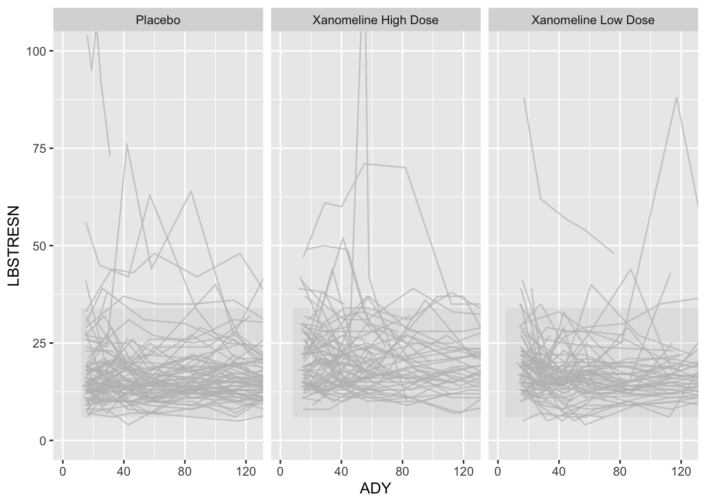
6.4 4. geom_boxplot을 사용하여 분포 시각화
상자 그림은 값의 분포에 대한 유용한 요약을 제공합니다. 데이터의 사분위수, 중앙값 및 범위를 보여줍니다. 상자 그림의 문제점은 값의 개수를 표시하지 않는다는 것입니다. 따라서 다음 플롯에서는 점과 상자 그림 정보를 모두 볼 수 있도록 데이터 포인트를 중첩하려고 합니다.
“ggplot2를 사용한 데이터 시각화” 치트 시트를 보고 상자 그림에 대한 옵션이 무엇인지 확인해 보겠습니다. geom_boxplot은 “이산 x, 연속 y”로 표시된 섹션에 있습니다. 데이터에서 WEEK가 연속(숫자) 값이므로 as.factor( ) 함수를 사용하여 이산 값으로 변환하면 상자 그림이 가장 잘 작동합니다. 이렇게 하면 주 값이 동일한 간격으로 배치되므로 왼쪽의 상자 그림은 1주 간격의 데이터를 표시하고 오른쪽의 상자 그림은 8주 간격의 데이터를 표시합니다. 이는 WEEK를 범주형 변수로 처리하는 것의 한계입니다.
ALT2 %>%
filter(WEEK %in% c(0, 5, 10, 15, 20, 25, 30)) %>%
ggplot() +
geom_boxplot(mapping = aes(x = as.factor(WEEK), y = LBSTRESN))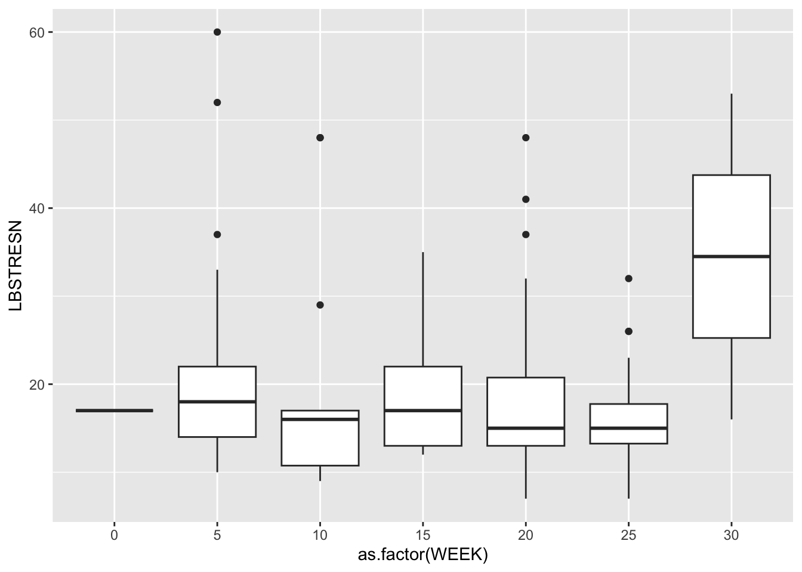
이제 상자 그림 위에 데이터를 추가해 보겠습니다. geom_point를 사용하여 매우 쉽게 이 작업을 수행할 수 있습니다. 아래 코드에서 필요한 경우 mapping 인수를 추가하십시오.
ALT2 %>%
filter(WEEK %in% c(0, 5, 10, 15, 20, 25, 30)) %>%
ggplot(mapping = aes(x = as.factor(WEEK), y = LBSTRESN)) + # 여기에 공통 매핑 정의
geom_boxplot() + # ggplot()에서 매핑 상속
geom_point() # ggplot()에서 매핑 상속
개별 점을 볼 수 있도록 점을 약간 분산시키는 것이 더 유용할 수 있습니다. geom_jitter를 사용하여 이 작업을 수행합니다. 또한 점에 alpha 설정을 적용하여 투명도를 추가하여 아래 상자 그림을 볼 수 있습니다. geom_jitter의 width 옵션은 점의 수평 지터를 제어합니다. 값이 작을수록 상자 그림의 중앙에 더 가깝게 군집됩니다. 기본값은 상자 그림의 전체 너비를 사용하는 것입니다. geom_boxplot에서 outlier.shape = NA 인수를 설정하면 이상값 표시를 “끄게” 됩니다. 이 경우 geom_jitter를 통해 표시하므로 상자 그림에 또한 표시할 필요가 없습니다.
plot2b <- ALT2 %>%
filter(WEEK %in% c(0, 5, 10, 15, 20, 25, 30)) %>% # 이전 예제의 필터 조건
ggplot(mapping = aes(x = as.factor(WEEK), y = LBSTRESN)) + # 이전 예제의 미적 매핑
geom_boxplot(outlier.shape = NA) + # 상자 그림에서 이상값 점 끄기
geom_jitter(alpha = 0.2, width = 0.1) # 투명도 및 제어된 분산으로 지터된 점 추가
plot2b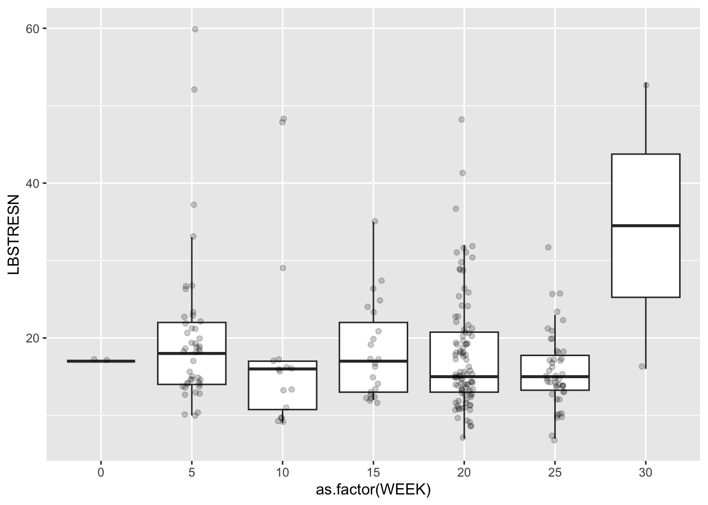
6.5 5. 다른 패키지를 사용하여 분포 표시
{ggdist} 및 {ggridges}와 같은 패키지를 사용하여 값의 분포를 표시할 수도 있습니다. 이러한 각 패키지는 {ggplot2} 객체를 생성하며, 이는 다른 {ggplot2} 객체와 마찬가지로 주석을 달고 사용할 수 있습니다. 일반적으로 {ggplot2} 확장은 새로운 geom_ 또는 stat_ 함수를 추가합니다.
{ggdist}를 사용하여 데이터의 점 플롯을 표시해 보겠습니다. {ggdist}는 점의 분포를 보여주기 때문에 수직이 아닌 수평으로 보는 것이 더 쉬운 경우가 많습니다. 이 경우 플롯을 회전하여 x축에 연속 ALT 값을, y축에 주 값을 배치했습니다.
library(ggdist)
ALT2 %>%
filter(WEEK %in% c(0, 5, 10, 15, 20, 25, 30)) %>%
ggplot(mapping = aes(x = LBSTRESN, y = as.factor(WEEK))) +
coord_cartesian(xlim=c(0, 100)) +
stat_dotsinterval(slab_shape = 19, quantiles = 100)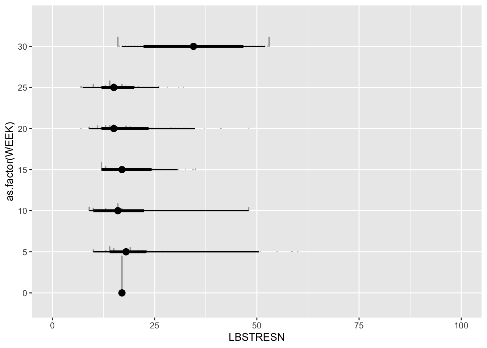
또 다른 옵션은 점이 아닌 부드러운 곡선으로 분포를 표시하는 것입니다. {ggdist}에는 이를 돕는 stat_slab geom이 있습니다. 아래에 표시된 플롯은 명백한 이유로 “레인클라우드 플롯”이라고도 합니다.
ALT2 %>%
filter(WEEK %in% c(0, 5, 10, 15, 20, 25, 30)) %>%
ggplot(mapping = aes(x = LBSTRESN, y = as.factor(WEEK), fill = as.factor(WEEK))) +
coord_cartesian(xlim=c(0, 75)) +
stat_slab() +
stat_dotsinterval(side = "bottom", scale = 0.5, slab_size = NA) 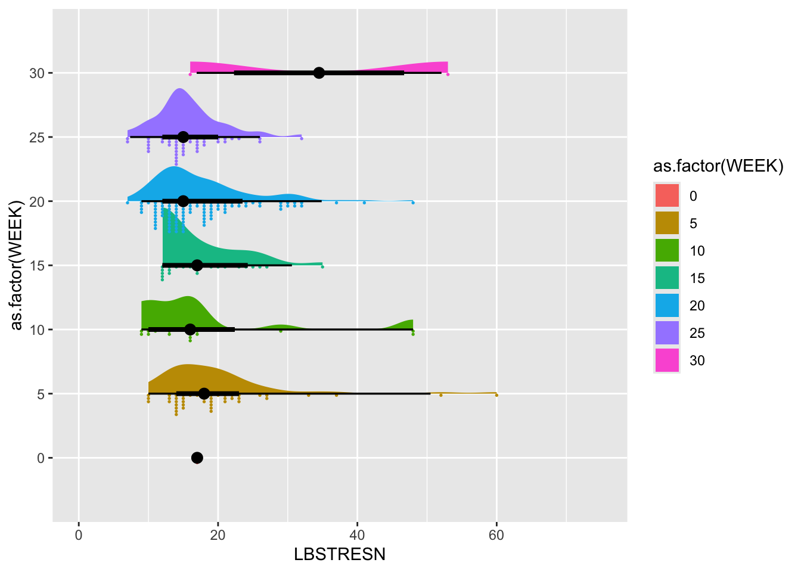
{ggridges} 패키지는 이러한 분포 표현을 가져와 분포 “능선”을 약간 중첩하여 공간을 최소화합니다. 플롯을 통해 분포 간을 매우 쉽게 비교할 수 있습니다.
library(ggridges)
Attaching package: 'ggridges'The following objects are masked from 'package:ggdist':
scale_point_color_continuous, scale_point_color_discrete,
scale_point_colour_continuous, scale_point_colour_discrete,
scale_point_fill_continuous, scale_point_fill_discrete,
scale_point_size_continuousALT2 %>%
filter(WEEK %in% c(0, 5, 10, 15, 20, 25, 30)) %>%
ggplot(mapping = aes(x = LBSTRESN, y = as.factor(WEEK))) +
coord_cartesian(xlim=c(0, 80)) +
geom_density_ridges()Picking joint bandwidth of 5.07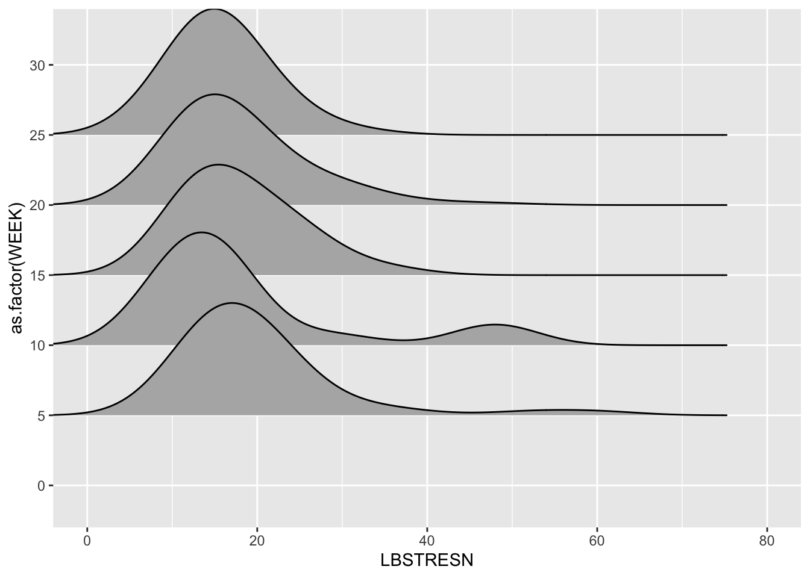
6.6 6. geom_bar를 사용하여 개수 세기
막대 차트를 사용하여 데이터의 관측치 수를 셀 수 있습니다. geom_bar를 사용하여 치료 주별로 “낮음”, “정상” 및 “높음” ALT의 발생률을 시각화해 보겠습니다.
“ggplot2를 사용한 데이터 시각화” 치트 시트(RStudio의 도움말 메뉴에서)를 사용하여 geom_bar 막대 차트에 대해 지정할 수 있는 미학을 확인하여 WEEK에 걸쳐 LBNRIND의 각 범주에 있는 관측치 수를 표시하는 방법을 확인하십시오.
ALT2 %>%
filter(WEEK %in% c(2, 4, 6, 8, 16, 24, 26)) %>% # 이러한 특정 주만 포함하도록 필터링
ggplot( ) +
geom_bar(mapping = aes(x = as.factor(WEEK), # WEEK를 이산 막대에 대한 팩터로 변환
fill = LBNRIND))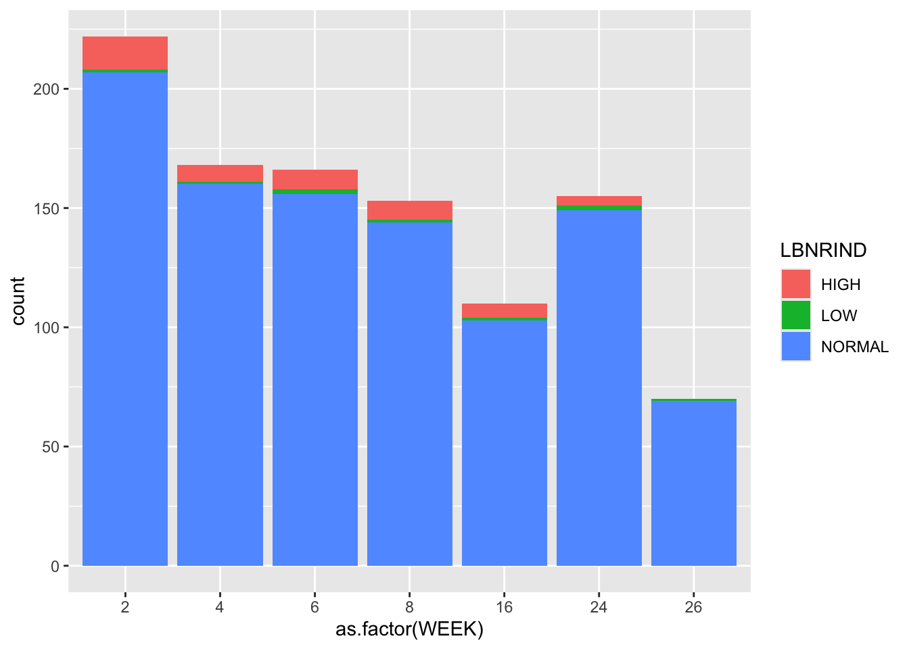
대부분의 개인은 2, 4, 6, 8, 16, 24, 26주에 실험실 측정을 받습니다. 해당 주만 표시하도록 데이터를 필터링해 보겠습니다.
ALT2 %>%
filter(WEEK %in% c(2, 4, 6, 8, 16, 24, 26)) %>%
ggplot( ) +
geom_bar(mapping = aes(x = WEEK,
fill = LBNRIND))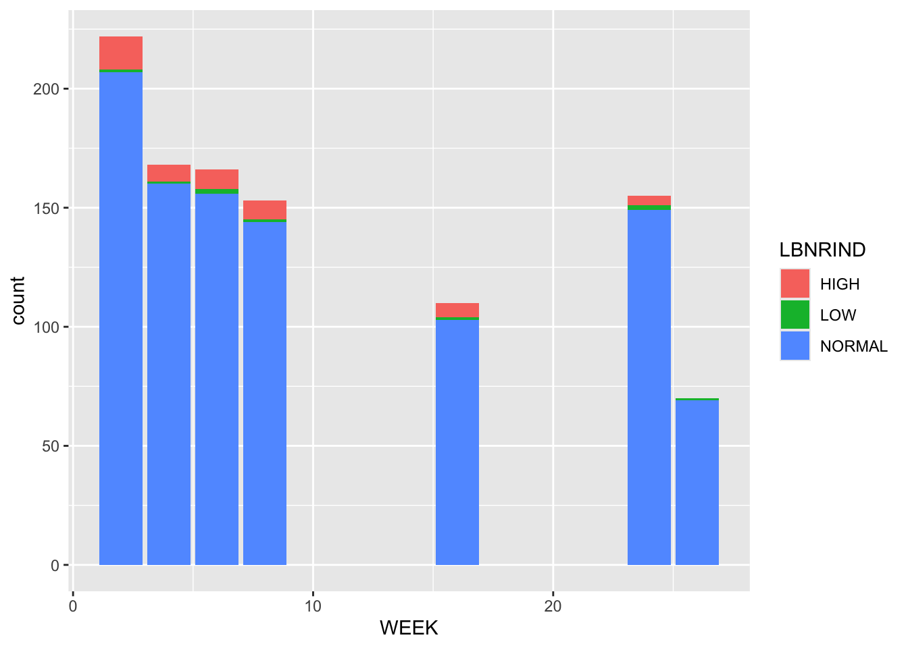
다시 한 번, WEEK 변수를 연속형에서 범주형으로 변환하려고 합니다. 위와 같이 as.factor를 사용하여 이 작업을 수행할 수 있습니다.
plot3 <- ALT2 %>%
filter(WEEK %in% c(2, 4, 6, 8, 16, 24, 26)) %>%
ggplot( ) +
geom_bar(mapping = aes(x = as.factor(WEEK),
fill = LBNRIND))
plot3누적 막대 차트에서는 LOW 및 HIGH 그룹의 값이 NORMAL 관측치보다 훨씬 작기 때문에 시간이 지남에 따라 어떻게 변하는지 정확하게 보기 어렵습니다. position = dodge 옵션을 사용하여 x축에 LOW 및 HIGH를 별도로 배치할 수 있습니다. 또한 LBNRIND를 “LOW” -> “NORMAL” -> “HIGH”로 정렬된 팩터로 바꾸고 있습니다. 이는 문자 열의 기본 정렬이 영숫자이기 때문입니다.
plot3b <- ALT2 %>%
filter(WEEK %in% c(2, 4, 6, 8, 16, 24, 26)) %>%
mutate(OUTRANGF = factor(LBNRIND,
levels = c("LOW","NORMAL","HIGH"))) %>%
ggplot() +
geom_bar(mapping = aes(x = as.factor(WEEK),
fill = OUTRANGF),
position = "dodge")
plot3b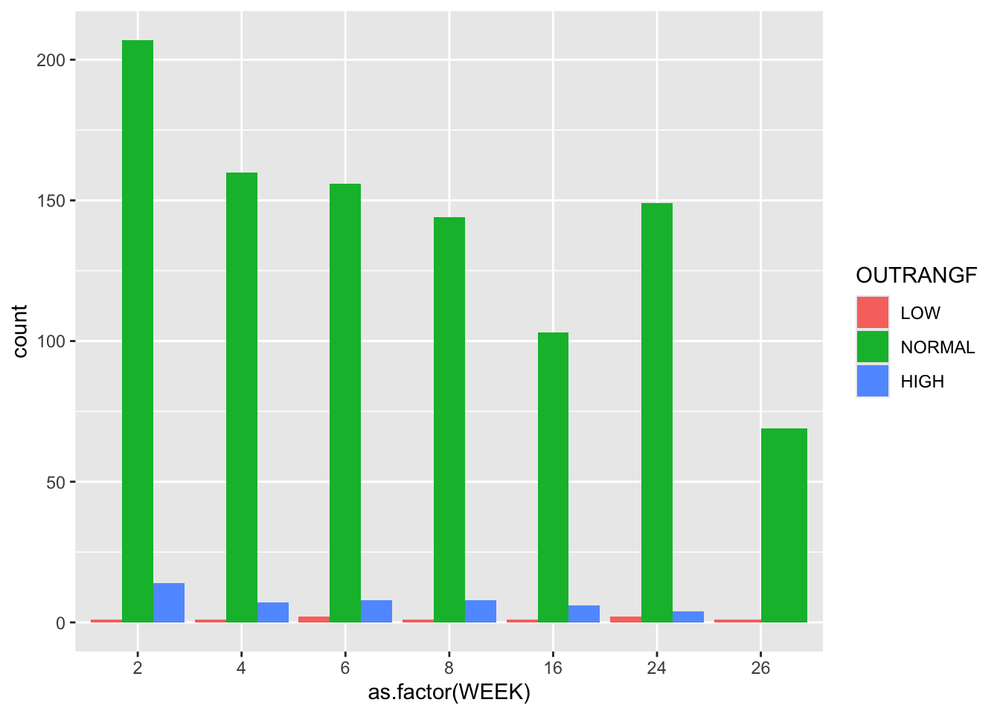
마지막 미니 프로젝트에서 했던 것처럼 이제 플롯 plot1b와 plot2b를 가져와 labs 함수를 사용하여 축 레이블을 정리할 수 있습니다.
plot1e <- plot1b +
labs(x = "알라닌 아미노전이효소 (U/L)", # plot_ALT의 x_var = LBSTRESN 기준
y = "주") # plot_ALT의 y_var = WEEK 기준
plot2c <- plot2b +
labs(x = "주", # x = as.factor(WEEK) 기준
y = "알라닌 아미노전이효소 (U/L)") # y = LBSTRESN 기준
plot3c <- plot3b +
labs(x = "주", # x = as.factor(WEEK) 기준
y = "관측치 수") # geom_bar는 기본적으로 관측치를 셉니다.6.7 7. {patchwork} 사용
{patchwork} 패키지를 사용하면 플롯을 빠르고 쉽게 결합할 수 있습니다. 두 플롯을 하나로 결합하려면 “+” 연산자를 사용하여 간단히 “추가”하면 됩니다.
{patchwork} 설명서에서 레이아웃을 지정하는 방법에 대해 자세히 알아볼 수 있습니다.
library(patchwork)
p1 <- plot1e | plot2c
p1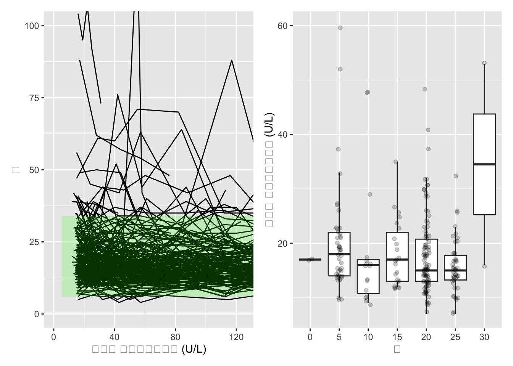
세 그래프를 결합하기 위해 다른 레이아웃을 시도해 보십시오:
p2 <- (plot2c | plot3c) / plot1e
p2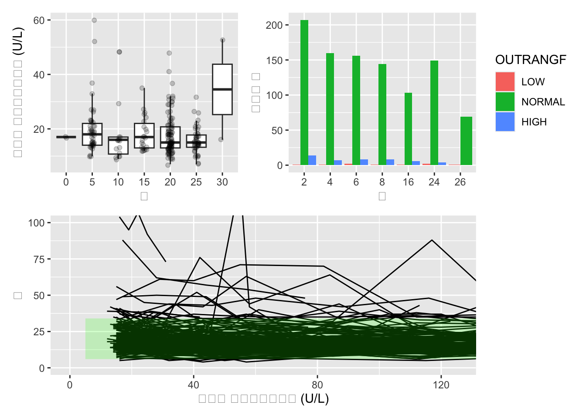
그런 다음 이러한 결합된 플롯을 하나의 객체로 사용하고 조합에 대한 제목을 제공하는 등의 작업을 수행할 수 있습니다. {patchwork}에는 {ggplot2}의 labs 함수와 유사한 기능을 제공하지만 결합된 플롯 객체에 주석을 다는 자체 함수 plot_annotation이 있습니다. 미니 프로젝트 5에서 배운 내용을 사용하여 결합된 플롯에 제목과 부제를 추가하십시오.
plot_annotation은 또한 tag_levels를 사용하여 하위 그림을 식별하기 위한 패턴을 지정할 수 있도록 합니다. 여기서는 첫 번째 플롯을 소문자 a로 지정하고 두 번째 플롯은 패턴을 따라 b를 표시합니다. 또한 tag_suffix를 사용하여 태그 뒤에 둥근 괄호를 넣습니다. 아래 코드를 시도한 다음 tag_levels = "i"를 “a” 대신 지정하면 어떻게 되는지 확인하십시오.
p2b <- p2 + plot_annotation(
title = ,
subtitle = ,
tag_levels="a", tag_suffix = ")")
p2b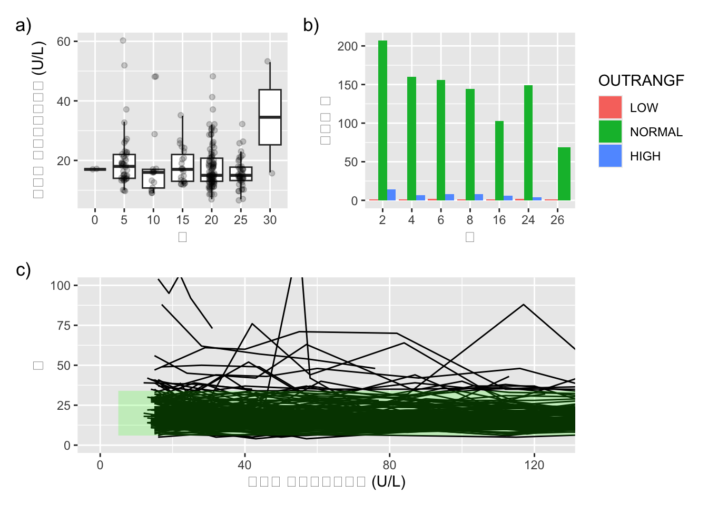
6.8 8. {cowplot} 사용
Claus O. Wilke(따라서 COW)의 {cowplot} 패키지에는 {ggplot2} 플롯 객체에서 작동하는 매우 유용한 추가 함수가 많이 있습니다. Claus의 책 “데이터 시각화의 기초”는 고품질 데이터 시각화를 만드는 것에 대한 정말 훌륭한 책이며 꼭 읽어보시기를 강력히 추천합니다. 이 패키지는 책의 권장 사항을 R에서 적용할 수 있는 함수로 바꿉니다.
아래 코드에서는 위에서 만든 플롯에 워터마크를 추가할 것입니다.
library(cowplot)
Attaching package: 'cowplot'The following object is masked from 'package:patchwork':
align_plotsThe following object is masked from 'package:lubridate':
stampggdraw(p2b) +
draw_label("DRAFT", color = "grey", alpha=0.3, size = 100, angle = 45) Warning in grid.Call(C_textBounds, as.graphicsAnnot(x$label), x$x, x$y, :
conversion failure on '알라닌 아미노전이효소 (U/L)' in 'mbcsToSbcs': dot
substituted for <ec>Warning in grid.Call(C_textBounds, as.graphicsAnnot(x$label), x$x, x$y, :
conversion failure on '알라닌 아미노전이효소 (U/L)' in 'mbcsToSbcs': dot
substituted for <95>Warning in grid.Call(C_textBounds, as.graphicsAnnot(x$label), x$x, x$y, :
conversion failure on '알라닌 아미노전이효소 (U/L)' in 'mbcsToSbcs': dot
substituted for <8c>Warning in grid.Call(C_textBounds, as.graphicsAnnot(x$label), x$x, x$y, :
conversion failure on '알라닌 아미노전이효소 (U/L)' in 'mbcsToSbcs': dot
substituted for <eb>Warning in grid.Call(C_textBounds, as.graphicsAnnot(x$label), x$x, x$y, :
conversion failure on '알라닌 아미노전이효소 (U/L)' in 'mbcsToSbcs': dot
substituted for <9d>Warning in grid.Call(C_textBounds, as.graphicsAnnot(x$label), x$x, x$y, :
conversion failure on '알라닌 아미노전이효소 (U/L)' in 'mbcsToSbcs': dot
substituted for <bc>Warning in grid.Call(C_textBounds, as.graphicsAnnot(x$label), x$x, x$y, :
conversion failure on '알라닌 아미노전이효소 (U/L)' in 'mbcsToSbcs': dot
substituted for <eb>Warning in grid.Call(C_textBounds, as.graphicsAnnot(x$label), x$x, x$y, :
conversion failure on '알라닌 아미노전이효소 (U/L)' in 'mbcsToSbcs': dot
substituted for <8b>Warning in grid.Call(C_textBounds, as.graphicsAnnot(x$label), x$x, x$y, :
conversion failure on '알라닌 아미노전이효소 (U/L)' in 'mbcsToSbcs': dot
substituted for <8c>Warning in grid.Call(C_textBounds, as.graphicsAnnot(x$label), x$x, x$y, :
conversion failure on '알라닌 아미노전이효소 (U/L)' in 'mbcsToSbcs': dot
substituted for <ec>Warning in grid.Call(C_textBounds, as.graphicsAnnot(x$label), x$x, x$y, :
conversion failure on '알라닌 아미노전이효소 (U/L)' in 'mbcsToSbcs': dot
substituted for <95>Warning in grid.Call(C_textBounds, as.graphicsAnnot(x$label), x$x, x$y, :
conversion failure on '알라닌 아미노전이효소 (U/L)' in 'mbcsToSbcs': dot
substituted for <84>Warning in grid.Call(C_textBounds, as.graphicsAnnot(x$label), x$x, x$y, :
conversion failure on '알라닌 아미노전이효소 (U/L)' in 'mbcsToSbcs': dot
substituted for <eb>Warning in grid.Call(C_textBounds, as.graphicsAnnot(x$label), x$x, x$y, :
conversion failure on '알라닌 아미노전이효소 (U/L)' in 'mbcsToSbcs': dot
substituted for <af>Warning in grid.Call(C_textBounds, as.graphicsAnnot(x$label), x$x, x$y, :
conversion failure on '알라닌 아미노전이효소 (U/L)' in 'mbcsToSbcs': dot
substituted for <b8>Warning in grid.Call(C_textBounds, as.graphicsAnnot(x$label), x$x, x$y, :
conversion failure on '알라닌 아미노전이효소 (U/L)' in 'mbcsToSbcs': dot
substituted for <eb>Warning in grid.Call(C_textBounds, as.graphicsAnnot(x$label), x$x, x$y, :
conversion failure on '알라닌 아미노전이효소 (U/L)' in 'mbcsToSbcs': dot
substituted for <85>Warning in grid.Call(C_textBounds, as.graphicsAnnot(x$label), x$x, x$y, :
conversion failure on '알라닌 아미노전이효소 (U/L)' in 'mbcsToSbcs': dot
substituted for <b8>Warning in grid.Call(C_textBounds, as.graphicsAnnot(x$label), x$x, x$y, :
conversion failure on '알라닌 아미노전이효소 (U/L)' in 'mbcsToSbcs': dot
substituted for <ec>Warning in grid.Call(C_textBounds, as.graphicsAnnot(x$label), x$x, x$y, :
conversion failure on '알라닌 아미노전이효소 (U/L)' in 'mbcsToSbcs': dot
substituted for <a0>Warning in grid.Call(C_textBounds, as.graphicsAnnot(x$label), x$x, x$y, :
conversion failure on '알라닌 아미노전이효소 (U/L)' in 'mbcsToSbcs': dot
substituted for <84>Warning in grid.Call(C_textBounds, as.graphicsAnnot(x$label), x$x, x$y, :
conversion failure on '알라닌 아미노전이효소 (U/L)' in 'mbcsToSbcs': dot
substituted for <ec>Warning in grid.Call(C_textBounds, as.graphicsAnnot(x$label), x$x, x$y, :
conversion failure on '알라닌 아미노전이효소 (U/L)' in 'mbcsToSbcs': dot
substituted for <9d>Warning in grid.Call(C_textBounds, as.graphicsAnnot(x$label), x$x, x$y, :
conversion failure on '알라닌 아미노전이효소 (U/L)' in 'mbcsToSbcs': dot
substituted for <b4>Warning in grid.Call(C_textBounds, as.graphicsAnnot(x$label), x$x, x$y, :
conversion failure on '알라닌 아미노전이효소 (U/L)' in 'mbcsToSbcs': dot
substituted for <ed>Warning in grid.Call(C_textBounds, as.graphicsAnnot(x$label), x$x, x$y, :
conversion failure on '알라닌 아미노전이효소 (U/L)' in 'mbcsToSbcs': dot
substituted for <9a>Warning in grid.Call(C_textBounds, as.graphicsAnnot(x$label), x$x, x$y, :
conversion failure on '알라닌 아미노전이효소 (U/L)' in 'mbcsToSbcs': dot
substituted for <a8>Warning in grid.Call(C_textBounds, as.graphicsAnnot(x$label), x$x, x$y, :
conversion failure on '알라닌 아미노전이효소 (U/L)' in 'mbcsToSbcs': dot
substituted for <ec>Warning in grid.Call(C_textBounds, as.graphicsAnnot(x$label), x$x, x$y, :
conversion failure on '알라닌 아미노전이효소 (U/L)' in 'mbcsToSbcs': dot
substituted for <86>Warning in grid.Call(C_textBounds, as.graphicsAnnot(x$label), x$x, x$y, :
conversion failure on '알라닌 아미노전이효소 (U/L)' in 'mbcsToSbcs': dot
substituted for <8c>Warning in grid.Call(C_textBounds, as.graphicsAnnot(x$label), x$x, x$y, :
conversion failure on '주' in 'mbcsToSbcs': dot substituted for <ec>Warning in grid.Call(C_textBounds, as.graphicsAnnot(x$label), x$x, x$y, :
conversion failure on '주' in 'mbcsToSbcs': dot substituted for <a3>Warning in grid.Call(C_textBounds, as.graphicsAnnot(x$label), x$x, x$y, :
conversion failure on '주' in 'mbcsToSbcs': dot substituted for <bc>Warning in grid.Call(C_textBounds, as.graphicsAnnot(x$label), x$x, x$y, :
conversion failure on '관측치 수' in 'mbcsToSbcs': dot substituted for <ea>Warning in grid.Call(C_textBounds, as.graphicsAnnot(x$label), x$x, x$y, :
conversion failure on '관측치 수' in 'mbcsToSbcs': dot substituted for <b4>Warning in grid.Call(C_textBounds, as.graphicsAnnot(x$label), x$x, x$y, :
conversion failure on '관측치 수' in 'mbcsToSbcs': dot substituted for <80>Warning in grid.Call(C_textBounds, as.graphicsAnnot(x$label), x$x, x$y, :
conversion failure on '관측치 수' in 'mbcsToSbcs': dot substituted for <ec>Warning in grid.Call(C_textBounds, as.graphicsAnnot(x$label), x$x, x$y, :
conversion failure on '관측치 수' in 'mbcsToSbcs': dot substituted for <b8>Warning in grid.Call(C_textBounds, as.graphicsAnnot(x$label), x$x, x$y, :
conversion failure on '관측치 수' in 'mbcsToSbcs': dot substituted for <a1>Warning in grid.Call(C_textBounds, as.graphicsAnnot(x$label), x$x, x$y, :
conversion failure on '관측치 수' in 'mbcsToSbcs': dot substituted for <ec>Warning in grid.Call(C_textBounds, as.graphicsAnnot(x$label), x$x, x$y, :
conversion failure on '관측치 수' in 'mbcsToSbcs': dot substituted for <b9>Warning in grid.Call(C_textBounds, as.graphicsAnnot(x$label), x$x, x$y, :
conversion failure on '관측치 수' in 'mbcsToSbcs': dot substituted for <98>Warning in grid.Call(C_textBounds, as.graphicsAnnot(x$label), x$x, x$y, :
conversion failure on '관측치 수' in 'mbcsToSbcs': dot substituted for <ec>Warning in grid.Call(C_textBounds, as.graphicsAnnot(x$label), x$x, x$y, :
conversion failure on '관측치 수' in 'mbcsToSbcs': dot substituted for <88>Warning in grid.Call(C_textBounds, as.graphicsAnnot(x$label), x$x, x$y, :
conversion failure on '관측치 수' in 'mbcsToSbcs': dot substituted for <98>Warning in grid.Call(C_textBounds, as.graphicsAnnot(x$label), x$x, x$y, :
conversion failure on '주' in 'mbcsToSbcs': dot substituted for <ec>Warning in grid.Call(C_textBounds, as.graphicsAnnot(x$label), x$x, x$y, :
conversion failure on '주' in 'mbcsToSbcs': dot substituted for <a3>Warning in grid.Call(C_textBounds, as.graphicsAnnot(x$label), x$x, x$y, :
conversion failure on '주' in 'mbcsToSbcs': dot substituted for <bc>Warning in grid.Call(C_textBounds, as.graphicsAnnot(x$label), x$x, x$y, :
conversion failure on '주' in 'mbcsToSbcs': dot substituted for <ec>Warning in grid.Call(C_textBounds, as.graphicsAnnot(x$label), x$x, x$y, :
conversion failure on '주' in 'mbcsToSbcs': dot substituted for <a3>Warning in grid.Call(C_textBounds, as.graphicsAnnot(x$label), x$x, x$y, :
conversion failure on '주' in 'mbcsToSbcs': dot substituted for <bc>Warning in grid.Call(C_textBounds, as.graphicsAnnot(x$label), x$x, x$y, :
conversion failure on '알라닌 아미노전이효소 (U/L)' in 'mbcsToSbcs': dot
substituted for <ec>Warning in grid.Call(C_textBounds, as.graphicsAnnot(x$label), x$x, x$y, :
conversion failure on '알라닌 아미노전이효소 (U/L)' in 'mbcsToSbcs': dot
substituted for <95>Warning in grid.Call(C_textBounds, as.graphicsAnnot(x$label), x$x, x$y, :
conversion failure on '알라닌 아미노전이효소 (U/L)' in 'mbcsToSbcs': dot
substituted for <8c>Warning in grid.Call(C_textBounds, as.graphicsAnnot(x$label), x$x, x$y, :
conversion failure on '알라닌 아미노전이효소 (U/L)' in 'mbcsToSbcs': dot
substituted for <eb>Warning in grid.Call(C_textBounds, as.graphicsAnnot(x$label), x$x, x$y, :
conversion failure on '알라닌 아미노전이효소 (U/L)' in 'mbcsToSbcs': dot
substituted for <9d>Warning in grid.Call(C_textBounds, as.graphicsAnnot(x$label), x$x, x$y, :
conversion failure on '알라닌 아미노전이효소 (U/L)' in 'mbcsToSbcs': dot
substituted for <bc>Warning in grid.Call(C_textBounds, as.graphicsAnnot(x$label), x$x, x$y, :
conversion failure on '알라닌 아미노전이효소 (U/L)' in 'mbcsToSbcs': dot
substituted for <eb>Warning in grid.Call(C_textBounds, as.graphicsAnnot(x$label), x$x, x$y, :
conversion failure on '알라닌 아미노전이효소 (U/L)' in 'mbcsToSbcs': dot
substituted for <8b>Warning in grid.Call(C_textBounds, as.graphicsAnnot(x$label), x$x, x$y, :
conversion failure on '알라닌 아미노전이효소 (U/L)' in 'mbcsToSbcs': dot
substituted for <8c>Warning in grid.Call(C_textBounds, as.graphicsAnnot(x$label), x$x, x$y, :
conversion failure on '알라닌 아미노전이효소 (U/L)' in 'mbcsToSbcs': dot
substituted for <ec>Warning in grid.Call(C_textBounds, as.graphicsAnnot(x$label), x$x, x$y, :
conversion failure on '알라닌 아미노전이효소 (U/L)' in 'mbcsToSbcs': dot
substituted for <95>Warning in grid.Call(C_textBounds, as.graphicsAnnot(x$label), x$x, x$y, :
conversion failure on '알라닌 아미노전이효소 (U/L)' in 'mbcsToSbcs': dot
substituted for <84>Warning in grid.Call(C_textBounds, as.graphicsAnnot(x$label), x$x, x$y, :
conversion failure on '알라닌 아미노전이효소 (U/L)' in 'mbcsToSbcs': dot
substituted for <eb>Warning in grid.Call(C_textBounds, as.graphicsAnnot(x$label), x$x, x$y, :
conversion failure on '알라닌 아미노전이효소 (U/L)' in 'mbcsToSbcs': dot
substituted for <af>Warning in grid.Call(C_textBounds, as.graphicsAnnot(x$label), x$x, x$y, :
conversion failure on '알라닌 아미노전이효소 (U/L)' in 'mbcsToSbcs': dot
substituted for <b8>Warning in grid.Call(C_textBounds, as.graphicsAnnot(x$label), x$x, x$y, :
conversion failure on '알라닌 아미노전이효소 (U/L)' in 'mbcsToSbcs': dot
substituted for <eb>Warning in grid.Call(C_textBounds, as.graphicsAnnot(x$label), x$x, x$y, :
conversion failure on '알라닌 아미노전이효소 (U/L)' in 'mbcsToSbcs': dot
substituted for <85>Warning in grid.Call(C_textBounds, as.graphicsAnnot(x$label), x$x, x$y, :
conversion failure on '알라닌 아미노전이효소 (U/L)' in 'mbcsToSbcs': dot
substituted for <b8>Warning in grid.Call(C_textBounds, as.graphicsAnnot(x$label), x$x, x$y, :
conversion failure on '알라닌 아미노전이효소 (U/L)' in 'mbcsToSbcs': dot
substituted for <ec>Warning in grid.Call(C_textBounds, as.graphicsAnnot(x$label), x$x, x$y, :
conversion failure on '알라닌 아미노전이효소 (U/L)' in 'mbcsToSbcs': dot
substituted for <a0>Warning in grid.Call(C_textBounds, as.graphicsAnnot(x$label), x$x, x$y, :
conversion failure on '알라닌 아미노전이효소 (U/L)' in 'mbcsToSbcs': dot
substituted for <84>Warning in grid.Call(C_textBounds, as.graphicsAnnot(x$label), x$x, x$y, :
conversion failure on '알라닌 아미노전이효소 (U/L)' in 'mbcsToSbcs': dot
substituted for <ec>Warning in grid.Call(C_textBounds, as.graphicsAnnot(x$label), x$x, x$y, :
conversion failure on '알라닌 아미노전이효소 (U/L)' in 'mbcsToSbcs': dot
substituted for <9d>Warning in grid.Call(C_textBounds, as.graphicsAnnot(x$label), x$x, x$y, :
conversion failure on '알라닌 아미노전이효소 (U/L)' in 'mbcsToSbcs': dot
substituted for <b4>Warning in grid.Call(C_textBounds, as.graphicsAnnot(x$label), x$x, x$y, :
conversion failure on '알라닌 아미노전이효소 (U/L)' in 'mbcsToSbcs': dot
substituted for <ed>Warning in grid.Call(C_textBounds, as.graphicsAnnot(x$label), x$x, x$y, :
conversion failure on '알라닌 아미노전이효소 (U/L)' in 'mbcsToSbcs': dot
substituted for <9a>Warning in grid.Call(C_textBounds, as.graphicsAnnot(x$label), x$x, x$y, :
conversion failure on '알라닌 아미노전이효소 (U/L)' in 'mbcsToSbcs': dot
substituted for <a8>Warning in grid.Call(C_textBounds, as.graphicsAnnot(x$label), x$x, x$y, :
conversion failure on '알라닌 아미노전이효소 (U/L)' in 'mbcsToSbcs': dot
substituted for <ec>Warning in grid.Call(C_textBounds, as.graphicsAnnot(x$label), x$x, x$y, :
conversion failure on '알라닌 아미노전이효소 (U/L)' in 'mbcsToSbcs': dot
substituted for <86>Warning in grid.Call(C_textBounds, as.graphicsAnnot(x$label), x$x, x$y, :
conversion failure on '알라닌 아미노전이효소 (U/L)' in 'mbcsToSbcs': dot
substituted for <8c>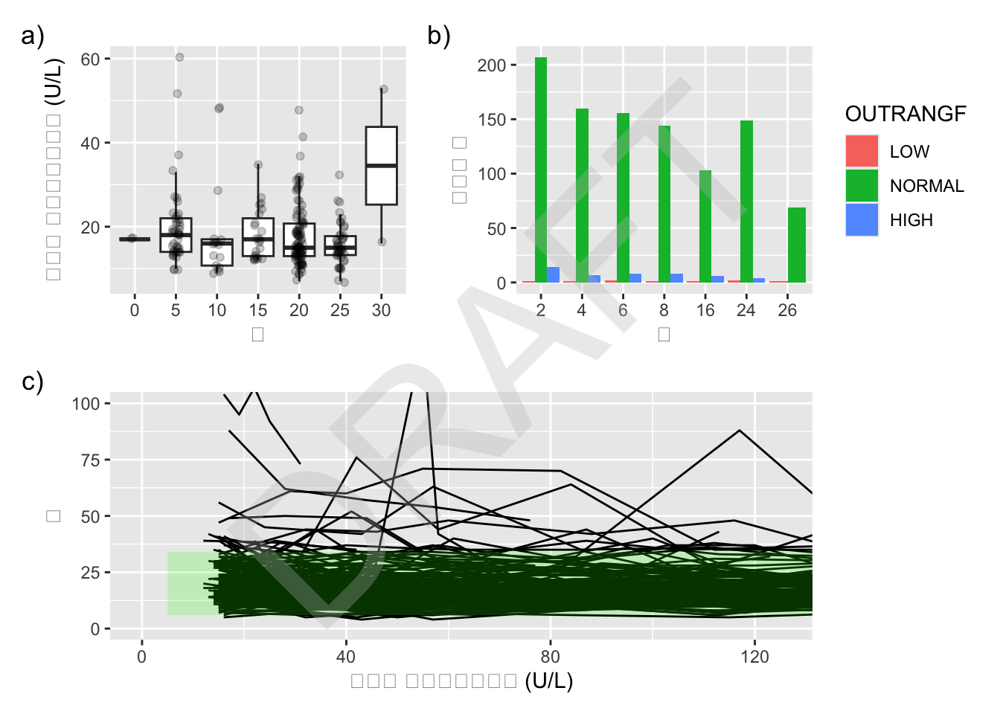
6.9 9. 챌린지
이 미니 프로젝트 6에서 배운 내용을 사용하여 첨부된 것과 유사한 그래프를 만들어 보십시오. 빨간색 점은 범위를 벗어난 ALT 값, 즉 OUTRANGT가 “높음” 또는 “낮음”인 경우를 나타냅니다. 이 챌린지를 완료하려면 미니 프로젝트 5를 다시 참조해야 할 수 있습니다.
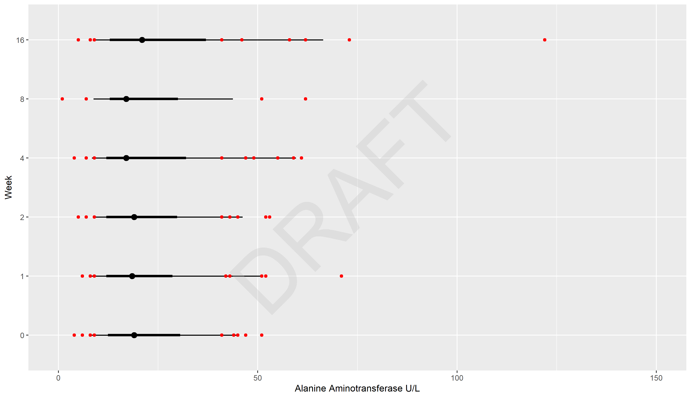
# 필요한 라이브러리가 로드되었는지 확인
library(tidyverse)
library(rio) # import()용
# adlbc.xpt에서 필요한 열로 ALT 데이터 다시 로드 및 준비
inFile <- "./data/adlbc.xpt"
ALT_data_for_challenge <- import(inFile) %>%
filter(PARAMCD == "ALT") %>%
mutate(
WEEK = floor(ADY / 7),
LBNRIND = factor(LBNRIND, levels = c("LOW", "NORMAL", "HIGH"))
) %>%
filter(WEEK %in% c(2, 4, 6, 8, 16, 24, 26))
# ALT에 대한 정상 상한(ULN) 추출
alt_uln_value <- unique(ALT_data_for_challenge$LBNRULN)
if (length(alt_uln_value) > 1) {
message("경고: ALT에 대해 여러 ULN 값이 발견되었습니다. 수평선에 첫 번째 값을 사용합니다.")
alt_uln_value <- alt_uln_value[1]
}
# 챌린지 플롯 생성
challenge_plot <- ALT_data_for_challenge %>%
ggplot(aes(x = WEEK, y = LBSTRESN)) +
geom_point(color = "grey60", alpha = 0.6, size = 1.5) +
geom_point(data = . %>% filter(LBNRIND %in% c("HIGH", "LOW")),
color = "red", size = 2, shape = 1) +
# 수정: 패싯 변수에 대해 알 수 있도록 주 데이터를 geom_hline에 전달
geom_hline(data = ALT_data_for_challenge, aes(yintercept = alt_uln_value),
linetype = "dashed", color = "blue", linewidth = 0.8) +
facet_wrap(~ TRT01A) +
labs(
x = "주",
y = "알라닌 아미노전이효소 (U/L)",
title = "치료군별 시간에 따른 ALT 값",
subtitle = "빨간색 점은 정상 범위를 벗어난 값(높음/낮음)을 나타냅니다.",
caption = paste0("점선은 ULN (", alt_uln_value, " U/L)을 나타냅니다.")
) +
theme_minimal() +
theme(
panel.grid.minor = element_blank(),
panel.grid.major.x = element_blank(),
plot.title = element_text(hjust = 0.5),
plot.subtitle = element_text(hjust = 0.5),
strip.background = element_rect(fill = "grey90", color = NA),
strip.text = element_text(face = "bold")
)
# 플롯 표시
challenge_plot